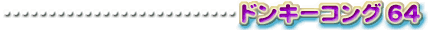
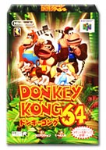
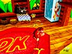
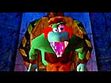
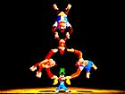

| 腕利きゲームキッズへのとっておきの贈り物 |
|  |
|  | 1999年12月10日発売予定 7,800円 |
|
Rareware logo is a trademark of Rare. |
||
| いまもむかしもゲームキッズに親しまれている人気キャラクター、ドンキーコングの主演作がついにロクヨンでも完成しました!!『ＤＫ64』こと『ドンキーコング64』です。 | ||
| 内容は、単純明解なルールが楽しいアクションゲーム。むずかしいことは考えず反射神経を頼りに進んでいくという、むかしながらのゲームの面白さを最新の技術を使って表現しています。ドンキーたちの世界をリアルに再現する３Ｄ映像、からだが勝手に踊り出すビートのきいた音楽、ビックリするような展開、ドンキーとなかまたちのユーモラスな動き……と、まるでおもちゃ箱をひっくり返したような楽しさです。 | ||
|  |
| 現在、カレの活躍を描いたアニメが放映中ということもあり、ゲームやアニメが大好きなこどもたちを中心に、話題騒然の『ＤＫ64』。おまけとして『ドンキーコングカードゲーム』のスペシャルカードもついてくるとあって、もらってうれしいギフトです！ | ||
| ↓さらに詳しい情報はこちら 【http://www.nintendo.co.jp/n01/n64/software/nus_p_ndoj/index.html】 |
||
 |
 |
|
 |